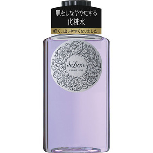

返回列表
产品名称：ドルックス オードルックス （ノーマル） N

資生堂 ドルックス オードルックス （ノーマル） N ＿
メーカー 資生堂
JANコード 4901872241187
商品の特徴
肌をしなやかにする化粧水
おだやかな感触でうるおいを与え、肌をしなやかにする。
成分・分量
-
用法及び用量
＜使用方法＞
●洗顔のあと、手のひらまたはコットンにティースプーン2／3杯をとり、肌になじませます。